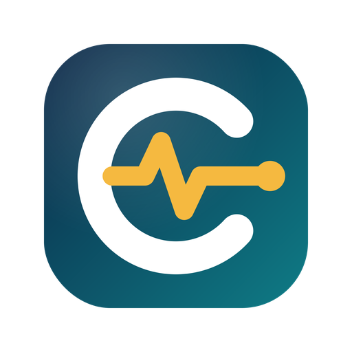
CEISA MonitorA Chrome and Edge extension that reads your CEISA 4.0 document list with your own login session, then builds a dashboard, follow-ups, meeting decks, official reports, Excel files and WhatsApp summaries. Everything runs in the browser, with no server.
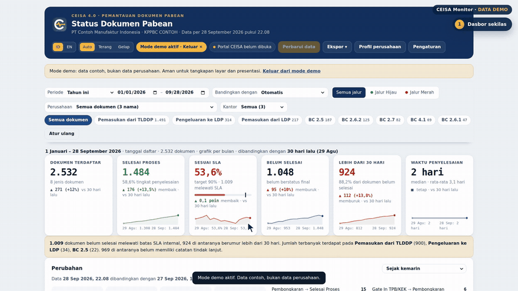
All screens use demo data.
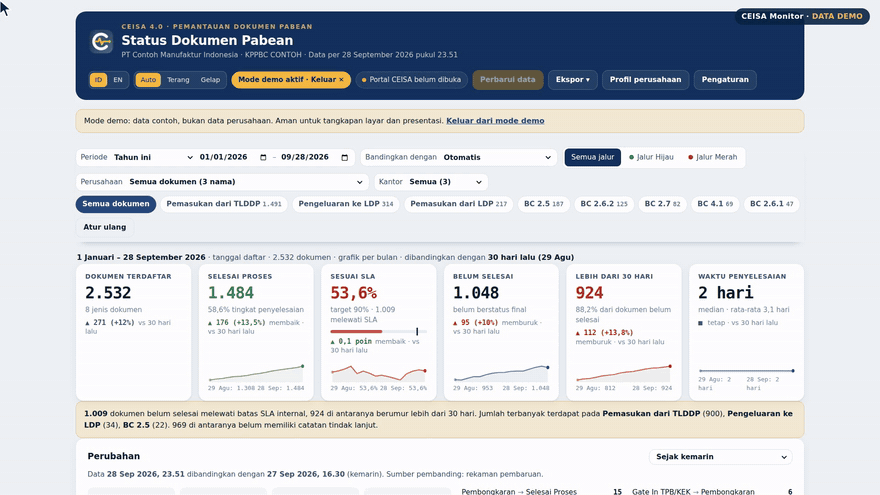
All data in the portal including last year; 7/30/90 days, quarters or a custom range. Every figure is compared automatically.
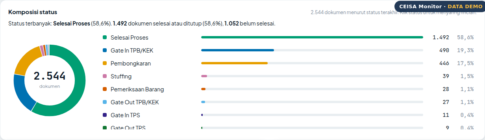
A donut and status list with counts and percentages; click a status to filter the detail table.
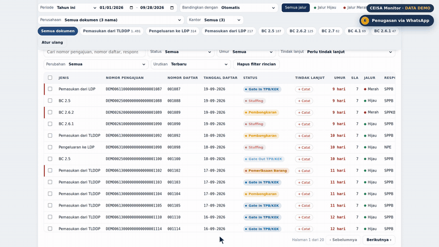
Tasks per document and one ready-to-send message for each person in charge.
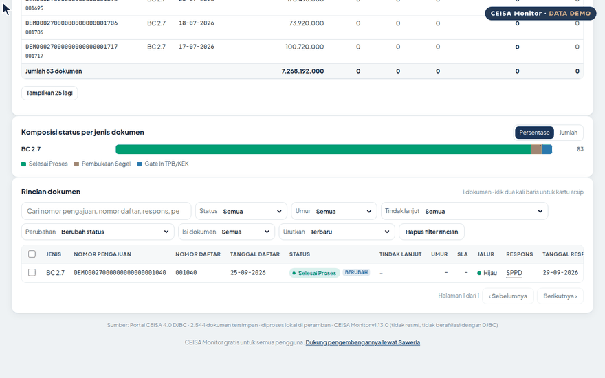
Before and after status, plus the portal's Status History and Response History with exact times, in the CHANGED popup.
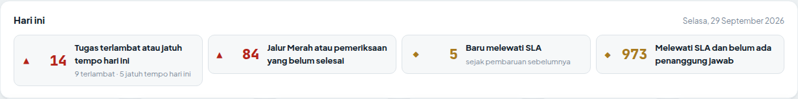
Urgent actions in one list: overdue tasks, red-lane or inspected documents, newly past SLA, and documents with no owner.
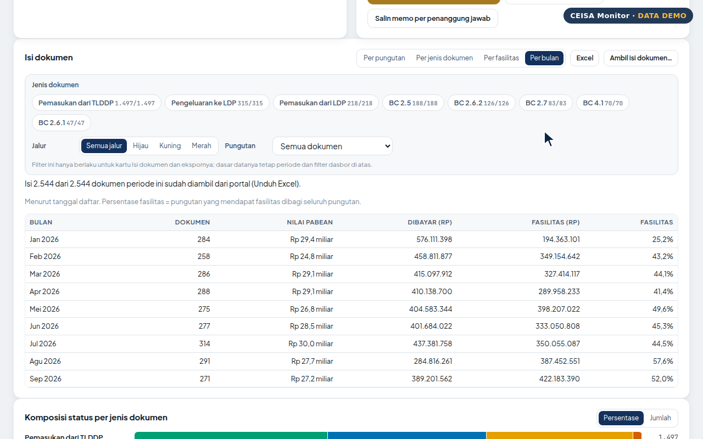
Duties paid and duties under facilities per month, with the facility utilisation rate.
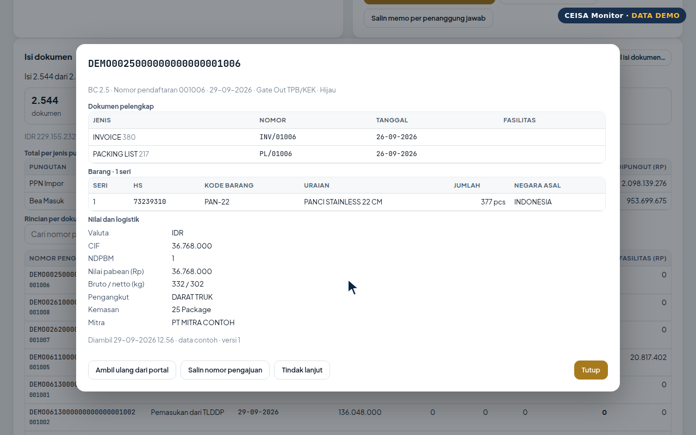
Supporting documents, goods, values, duties and guarantees from the portal's Excel download, in one click.
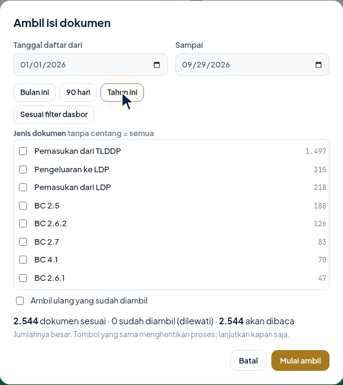
Choose a date range and document types; the summary shows how many will be read and the estimated time.
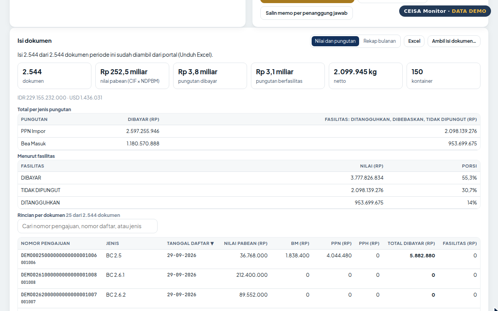
Customs value, import duty, VAT, income tax, total paid and facility per document, searchable and sortable. Excel export by period and document type.
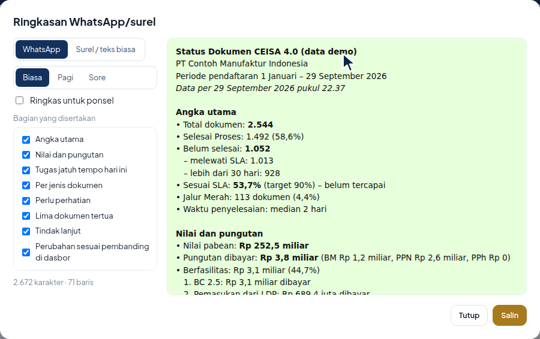
Key figures, values and duties, and today's tasks; choose Morning or Evening and a compact mode for phones.
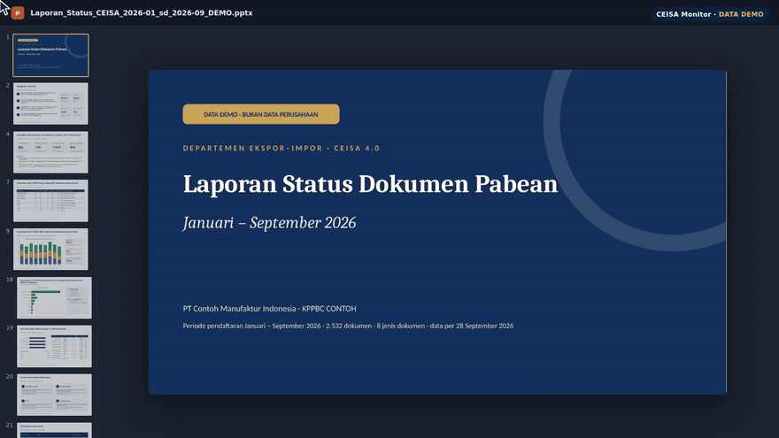
26 slides (or a 9-slide executive version) with conclusion-style titles, key points, values and duties, and appendices, built in seconds.
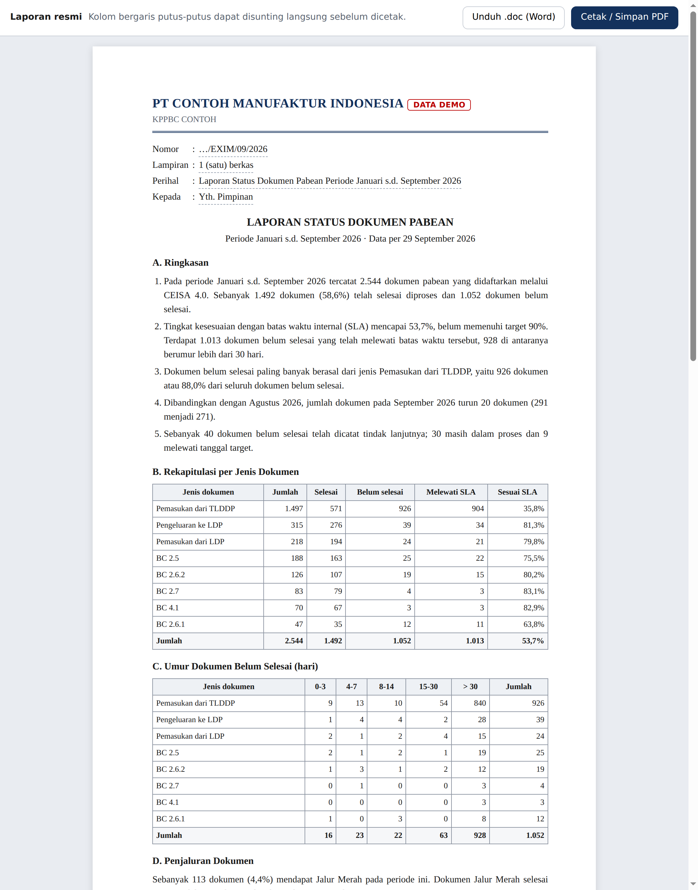
Letterhead, number, subject, narrative summary and approval sheet; PDF or Word.
Chrome or Microsoft Edge, only from the Chrome Web Store.
Details in SECURITY.md (Indonesian).